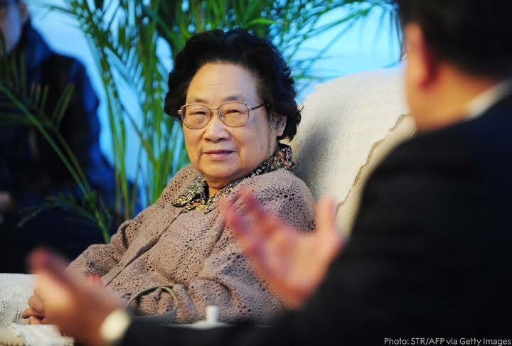

Fascinating story. Many drugs have their genesis as naturally occurring molecules.
(Colchicine is a famous example in cardiology. The Greeks used it to treat gout over 2000 years ago.)
Louis shares the Nobel Prize story of Tu Youyou and artemisinin as an example that many drugs, such as colchicine, derive from natural molecules. It is mostly off-topic for heart disease.
Fascinating story. Many drugs have their genesis as naturally occurring molecules.
(Colchicine is a famous example in cardiology. The Greeks used it to treat gout over 2000 years ago.)
Tu Youyou called her Nobel Prize discovery “A Gift from Traditional Chinese Medicine to the World.”
When hunting for a medicine to treat malaria, Tu turned to Chinese medical texts, initially collecting descriptions of over two thousand herbal, animal and mineral prescriptions.
Her search ended in the extraction of artemisinin – an anti-malarial that has saved millions of lives.
Learn more about our laureate and her discovery:
NobelPrize.orgNobel Prize in Physiology or Medicine 2015The Nobel Prize in Physiology or Medicine 2015 was divided, one half jointly to William C. Campbell and Satoshi Ōmura "for their discoveries concerning a novel therapy against infections caused by roundworm parasites" and the other half to Tu Youyou "for her discoveries concerning a novel therapy against Malaria"nobelprize.org


The poster relays that Dr. Joel Kahn still uses niacin, vitamin C with lysine and flaxseed for patients with high Lp(a), explicitly not endorsing them. The post gives no evidence for these approaches.
Shares a Physionic video asking how much longer you will live if you optimize all your lifestyle factors, answered in the video and comments. The description references a Circulation paper as its source.

Louis presents WHO data showing age-adjusted CVD death rates dropped from over 500 to nearly 100 per 100,000 between 1950 and 2019, while life expectancy rose from 68 to 79, and explains why age adjustment matters.
Brief claim that genetics may explain up to half of fatal coronary artery disease risk; the linked content is no longer available.

Louis notes heart disease deaths have started dropping after flatlining, citing an AHA report. It remains the leading US cause of death.

Louis quotes a statement arguing that cardiometabolic risk is cumulative and multifactorial, that interventions on different pathways give additive rather than competing benefits, and that lifestyle remains foundational while drugs targeting LDL-driven atherogenesis can add durable effect. He posts it as a counter to influencers who pit the two against each other.